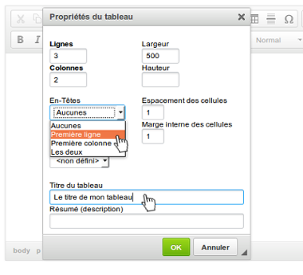
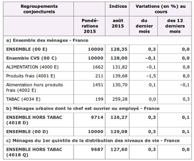

De manière générale :
- vous ne devez jamais créer de tableau, sauf pour présenter des données tabulaires ;
- si vous avez des données tabulaires à présenter, éviter autant que possible d'utiliser des tableaux, car même quand ils sont techniquement accessibles, ils restent complexes à appréhender.
L'enjeu pour l'utilisateur handicapé
Un tableau est une structure particulière. Un utilisateur présentant une déficience visuelle (aveugle ou malvoyant) qui utilise un lecteur d'écran navigue différemment dans celui-ci que dans les autres contenus textuels. Si ce tableau est complexe (par exemple, certains en-têtes ne s'appliquent pas à toutes les cellules du tableau), il est d'autant plus difficile de naviguer dedans, et d'en comprendre surtout le sens.
Pour accompagner l'utilisateur dans la lecture du tableau, il est important de définir des en-têtes de colonnes ou de lignes. Si elles sont définies, l'utilisateur de lecteur d'écran, qui n'a pas une vision globale du tableau, accède à ces en-têtes à chaque fois qu'il consulte une cellule du tableau. Cela lui permet de se repérer rapidement et ne pas avoir à reparcourir tout un tableau pour savoir quels en-têtes définissent la donnée en lecture.
Un titre de tableau est également indispensable. Il informe l'utilisateur sur le contenu (type de données, structure du tableau), ce qui lui permet de savoir s'il va ou non le parcourir et de se préparer à la lecture.
Pour un utilisateur présentant une déficience cognitive, présenter le tableau par un titre offre également des clés de compréhension du contenu.
En pratique et en images
La plupart des éditeurs de texte fournissent une fonction qui permet d'insérer un tableau,
souvent symbolisée par une icône de tableau .
Ci-dessous un exemple de fenêtre des propriétés d'un tableau dans l'éditeur CKEditor.

L'outil ici propose de définir des en-têtes. Vous pouvez choisir si les en-têtes de votre tableau sont en ligne ou en colonne (ou parfois les deux).
Ensuite, vous devez définir un titre de tableau. Il y a généralement un champ « Titre du tableau » à renseigner. Si votre outil ne vous permet pas de réaliser cette action, à défaut, utiliser un titre de contenu.
Si vous créez un tableau de données simple, le titre du tableau doit permettre de comprendre les données en question. Par exemple : « Chiffres d'affaires des différents secteurs d'activités. »
Ci-dessous un exemple de tableau simple. Il possède un titre « Dates limites de déclaration en ligne en fonction du département » et 2 en-têtes de colonnes (« Numéro du département de résidence » et « Date limite de déclaration en ligne »).

Tableau de données complexe
Si vous créez un tableau complexe, vous devez fournir, en plus d'un titre, un résumé du tableau afin de lui fournir les clés pour naviguer dedans. Ce résumé peut soit être placé dans le titre du tableau directement, soit dans un texte juste avant le tableau.
Le résumé d'un tableau complexe doit expliciter la structure du tableau et les données.
Un tableau de données complexe demande généralement des ajustements dans le code du tableau. Vous n'avez pas la capacité (généralement limité par les fonctions de l'éditeur de texte) de réaliser les ajustements nécessaires.
Dans la mesure du possible, si votre tableau est complexe, essayez de le simplifier, quitte à réaliser plusieurs tableaux simples.
Ci-dessous un exemple de tableau complexe (issu et adapté du site de l'INSEE). Vous y trouvez des en-têtes de colonnes fusionnées (« Variation (en %) au cours ») ainsi que des en-têtes qui titrent des parties du tableau (toutes les lignes fusionnées du type « a ») Ensemble des ménages - France »).

Dans ce cas de tableau complexe, pour faciliter la lecture, il serait par exemple possible de découper ce tableau en 3 tableaux distincts, chacun correspondant aux 3 sections (a, b et c).
Si ce tableau reste en l'état, un résumé pertinent pourrait être :
« Répartition des ménages en France en fonction du type d'achats. On y trouve 3 grands regroupements :
- un premier regroupement concerne l'ensemble des ménages en France ;
- un second regroupement concerne les ménages urbains dont le chef est ouvrier ou employé ;
- un troisième regroupement concerne les ménages du 1er quintile de la distribution des niveaux de vie.
Pour chacun des regroupements :
- la première colonne représente les pondérations pour l'année 2015 ;
- la seconde colonne représente l'indice pour le mois d'août 2015 ;
- la troisième colonne représente la variation en pourcent au cours du dernier mois ;
- la dernière colonne représente la variation en pourcent au cours des 12 derniers mois.
Mémo pour agir
- Ai-je vraiment besoin de créer un tableau ?
- Mon tableau a-t-il un titre ?
- Mes données sont-elles compréhensibles ? Les en-têtes sont-ils correctement déclarés ?